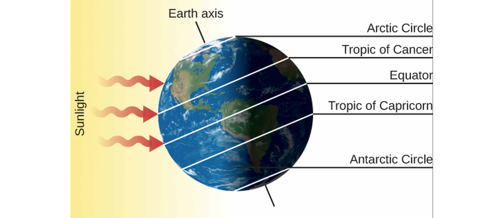

ASTR101 Ch 4-5
Ch 1 - Science and the Universe: A Brief Tour
Ch 4 - Earth, Moon, and Sky
Earth and Sky
- Earth's orbit is nearly a perfect circle
- Where do seasons come from?
- If it's Summer here, what season is it in Australia?
Locating Places on Earth
- A man waves hello to a penguin, walks 50 miles, turns right, walks another 50 miles, turns right again, walks another 50 miles, and waves hello to the same penguin, who has not moved. Where is he?
- What if it were a polar bear?
- Does Earth rotate towards the East or the West?
Latitude and Longitude
- Great circles: circles on surface of sphere sharing sphere center.
- Latitudes are meridians, passing through N and S poles.
- Longitudes start at Greenwich, England (GMT!), the Prime Meridian, 0°. They go 180° east and west.
- How can we use Polaris to find our latitude?
- How can we find our latitude?
- How can we find our longitude? (EC)

Figure 1: Djexplo/Wikimedia Commons
The Seasons
- What we know:
- The Earth's orbit is nearly circular, changing by <3%.
- Earth is closest to the Sun in January.
- The two hemispheres have opposite seasons.
- Conclusion: The seasons are caused by Earth's tilt!
- How, exactly?


- So one hemisphere gets more heat than the other during its Summer.
- But it also gets that heat for longer! Longer days!
- Does the sun rise in the Northeast or Southeast?

Limits of the sun's latitudinal movement
- Northernmost: June 21 (Summer Solstice)—sun over Tropic of Cancer (23° N), no nights in Arctic Circle, no days in Antarctic Circle.
- Southernmost: December 21 (Winter Solstice)—sun over Tropic of Capricorn (23° S), no days in Arctic Circle, no nights in Antarctic Circle.
- Sun crosses equator at vernal (Spring) and autumnal (Fall) equinoxes—North and South hemispheres are both 12 hours here.


The Seasons at Different Latitudes
- The Sun appears to rise earlier and set later because of atmospheric refraction.
- Twilight is when the sun is 18° below the horizon and the sky doesn't appear completely dark.
- This has an effect on seasons, weather, and day lengths.
- Eg, July and August are hotter than June because the atmosphere takes time to heat up, just like the day is hotter at sunset than sunrise.
Keeping Time
The Length of the Day
- The solar day is based on the sun's position in the sky. There's also the sidereal day, based on the actual 360° rotation of the Earth.
- Recall from last week's demo that a solar day is about 4 minutes longer than a sidereal day because of the Earth's orbital motion.

Apparent Solar Time
- So stars rise earlier and earlier according to the apparent solar time we use, based on the position of the Sun in the sky.
- The meridian is the great circle that crosses our zenith; hence a.m. (ante meridiem) and p.m. (post meridiem).
- Apparent solar time is not great for Astronomy, since the apparent solar day length varies in the year, the slight elliptical orbit of the Earth, and Earth's axis not being perpendicular its orbital plane.
Mean Solar Time and Standard Time
- Mean solar time is what we use, based on the average value of the solar day in the year, 24 hours—noon is when the Sun crosses the meridian.
- Time changes based on longitude, continually, but we split Earth into time zones roughly one hour each (fun fact, India chose a half-zone, 5.5 hours, and China only uses one time zone!).
- DST (daylight saving time) is ahead of the local standard time by one hour (Fall back, Spring Forward), to prolong sunlight into evening hours.
The International Date Line
- Lifehack, travel around the world to go back in time. Just kidding, the International Date Line, along the 180° meridian, changes the calendar date by one day. No loopholes!
The Calendar
The Challenge of the Calendar
- The entire calendar is based on Astronomy:
- Day is based on Earth's spin—defined as 1.0000 solar day.
- Month is length of full lunar cycle—29.5306 days.
- Year is based on Sun, and Earth's rotation around it—365.2422 days.
- Week? After Roman gods assigned to planets.
- These don't divide evenly..
Early Calendars
- Stonehenge (built over three periods, 2800-1500 BCE) concentric series of stones and ditches—some aligned with Sun and Moon during critical rising and setting periods (such Summer and Winter solstices).
- Mayans had a complex calendar which could predict Astronomical events through an observatory.
- Ancient Chinese calendar centered around 12-year Jupiter cycle—these are the 12 year signs of the Zodiac, which correspond to Jupiter's position along the Zodiac.
- Our calendar derives from the Sumerians, continuing with Egyptians and Greeks, leading to Ceasar's Julian Calendar, at 365.25 days/year, using leap years (with one extra day, 2/29) every four years (years divisible by 4).
- The Islamic Calendar is still lunar.
The Gregorian Calendar
- Pope Gregory XIII corrected the 11 minutes/year that the Julian calendar was off—off enough that the calendar was 10 days off by 1852.
- October 4, 1582, 10 days were immediately skipped in the calendar (to get back on track). Like Julian calendar, every four years is a leap year—except on centuries not divisible by 4 (e.g., 1700, 1800, 1900). The year 2000 was a leap year, but not the year 1900.
- Catholic countries followed suit, other countries later—American colonies skipped from September 2, 1752 to September 14, 1752 (12 days!). Russia had to omit 13 days by the time it adopted the calendar during the Bolshevik revolution.
Phases and Motions of the Moon
- Moonlight is literally reflected sunlight.
- Because of angles, results in phases (difference appearances, like full and crescent moon).
Lunar Phases
- Sun only moves 1/12 of the sky in one month—we can ignore this when looking at (monthly) lunar cycles.
- Sun illuminates half the moon, we observe at an angle.

- Waxing=growing, waning=shrinking
- Moon rises later and later than sun each day.
- Full moons are not generally blocked by the Earth—the diagram is not to scale and the Earth-Moon distance much larger, so Earth's shadow misses the moon most of the time (except lunar eclipses). The moon's also 5° from Earth's orbital plane.
The Moon's Revolution and Rotation
- Period of revolution and period of rotation are the same (this is called synchronous rotation),
- So, we only see one side of the moon!
- We measure the solar month—the period of the moon's cycles—as 29.5306 days, but the sidereal month (with respect to the stars) is 27.3217 days.
Ocean Tides and the Moon, The Formation of Tides
- Earth is stretched to a prolate spheroid by the moon's varying gravity across it, only about 20 cm.
- The effect is complicated by land mass shapes, friction, earth's rotation, wind, variable ocean depth, and so some places have large tides, some places small tides.

Eclipses of the Sun and Moon
- Sun and moon look like they're the same size (1/2°)—but the Sun is 400 times larger, and 400 times farther away—what a coincidence!
- An eclipse consists of dark umbra and lighter penumbra.

Eclipses of the Sun
- Are a possibility twice a year, when the lunar and solar paths cross.
- A partial eclipse occurs when the Moon simply partially covers the Sun.
- An annular eclipse is when the moon appears smaller than the sun and the sun's ring is seen (this is more common).
- A total solar eclipse occurs when the Moon is nearer than its average distance to Earth, and completely covers the sun.
- Total solar eclipse is a small area on the Earth, along the eclipse path.
- Lasts less than 7 minutes at any point on the path.
- Surrounded by larger area penumbra.

Eclipses of the Moon
- In a lunar eclipse, Everyone on Earth sees the same Earth shadow on the moon, so these are much less rare for a given location than a solar eclipse.
- Earth's shadow covers four moons' widths.
- Can last as long as 1h40.
Radiation and Spectra
The Behavior of Light
- Radiation in our context is light, which radiates outwards—though in other contexts it describes subatomic particles released in atomic processes.
- Our radiation (light, in this course) is also generated at the atomic level.
Maxwell's Theory of Electromagnetism
- Each atom is made up of protons (positive charge), neutrons (no charge), and electrons (negative charge).
- The neutrons and protons are in a tiny nucleus, while the electron is generally around it.
- Electricity and Magnetism - electric force is due to stationary charged particles interacting, while magnetic force is due to moving charged particles interacting (among other things).
- We can talk about the field that a charged distribution exerts as a generalization of its force on multiple objects; like the gravitational field, we call these the electric or magnetic fields; each can create the other.
- Oscillations of charged matter creates electromagnetic waves; light.
The Wave-Like Characteristics of Light
- Water and sound waves, light waves, and mediums.
- The aether.
- Speed of light.
- Wavelength λ is the horizontal length covered by one cycle, frequency f the number of cycles that pass per second (measured in 1/s, or Hertz; Hz). The wave speed is denoted \[v=f\lambda\]. For light in a vacuum, the velocity is given by \(v=c\).
Light as a Photon
- Light sometimes behaves like a particle would; we term the equivalent light "particle", a photon.
- This particle-wave duality is studied in Quantum Mechanics and Quantum Optics.
- The wave and photon models of light are simplifications of the quantum model which describes both.
Propagation of Light
- By how much does the area increase if we double the radius?
- As distance from the bright object increases by factor s, radiation concentration decreases by 1/s2; this is the inverse square law.
The Electromagnetic Spectrum


Types of Electromagnetic Radiation
- Gamma rays are high energy, short wavelength rays dangerous to living tissue. Generated deep inside stars and absorbed by atmosphere.
- X-rays are energetic and penetrate tissue but not bone (hence their use), blocked by atmosphere.
- Ultraviolet (UV) is higher energy than violet light; also called "black light"; mostly blocked by atmosphere, causes sunburn, cancer in overexposure.
- Visible light, ROY G BIV—mostly passes through atmosphere if not cloudy.
- Infrared radiation is absorbed by water and carbon dioxide, but somewhat penetrates atmosphere.
- Microwave, used in short-range communication and microwave ovens, are absorbed by water vapor.
- Radio waves include radar and AM (which reflects inside ionosphere).
- The visible universe is only one small portion of Astronomy, which includes radio astronomy, astronomy examining infrared, x-ray, etc.
Radiation and Temperature
- Astronomical objects can emit mostly one band of wavelengths, depending on temperature.
- Radiation source is atomic in nature. Particles vibrating rapidly (high temperature) emit higher energy waves in general.
Radiation Laws
- Blackbody: object that doesn't reflect or scatter any radiation (an idealization useful for theory); it absorbs radiation, gets hot, and its atoms release radiation from the heat.
- Wien's Law: The higher the temperature, the shorter the peak energy wavelength.